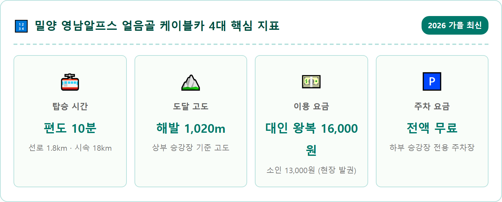
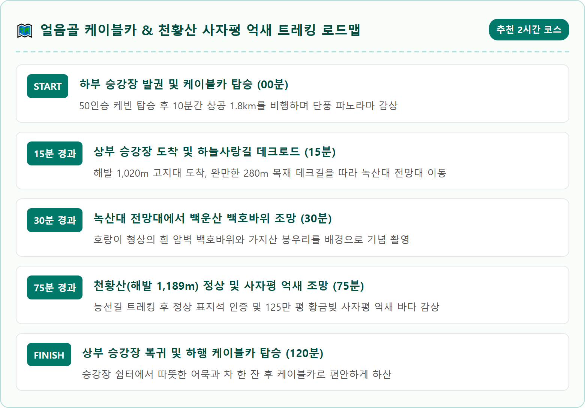
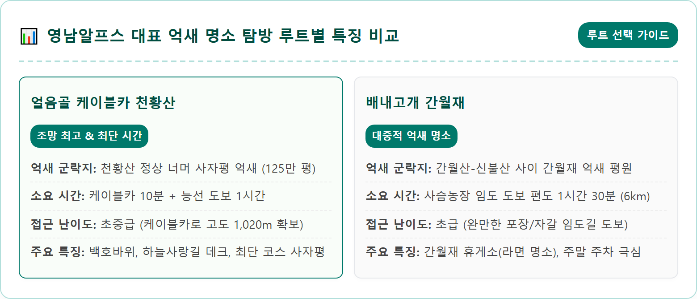
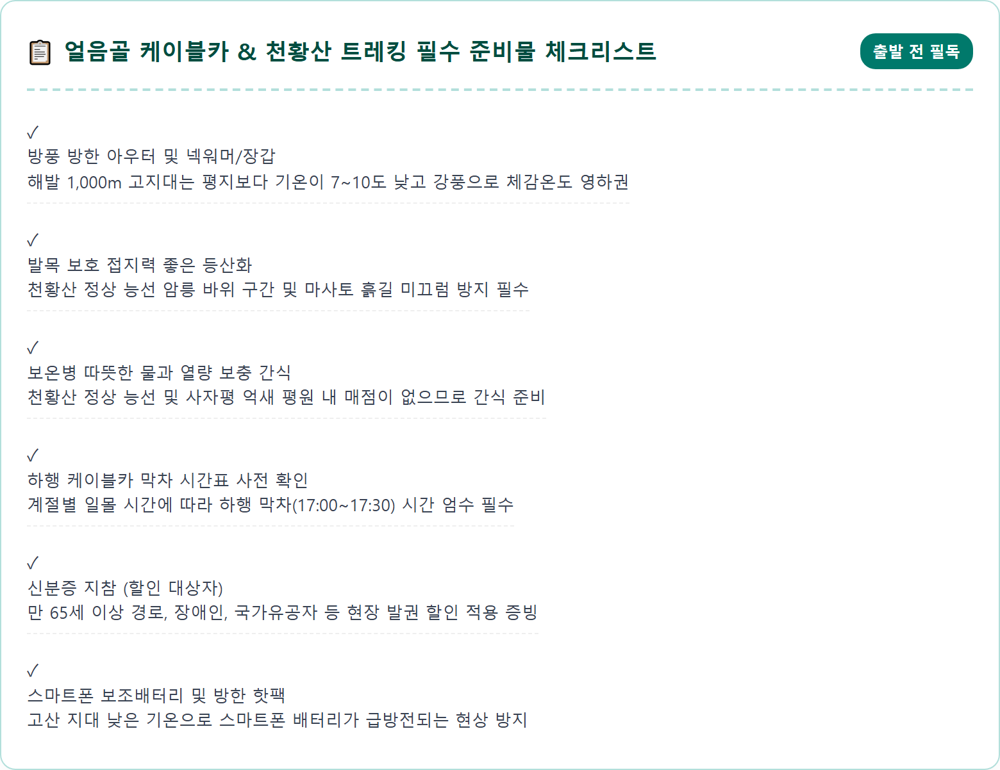
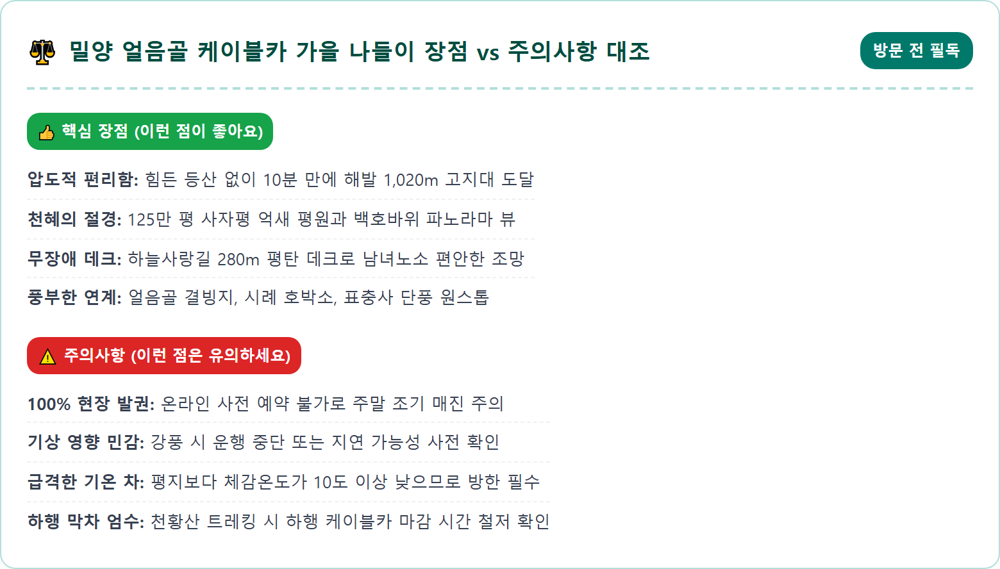
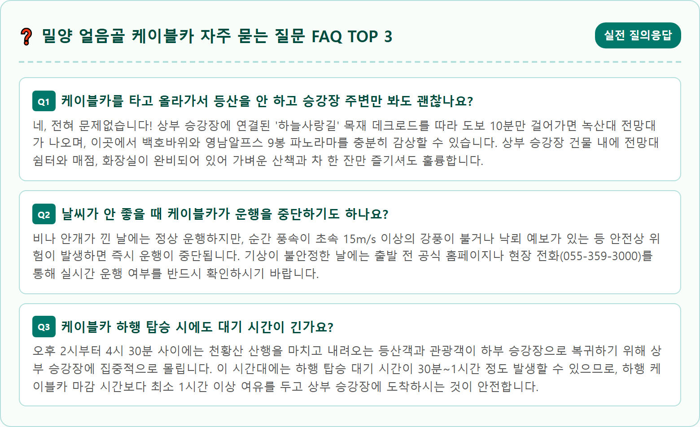

A magnificent aerial perspective of the Yeongnam Alps Ice Valley Cable Car in Miryang, South Korea during peak autumn. The sleek modern red cable car cabin glides smoothly along cables high above a deep rugged mountain gorge. Below, the vast mountain slopes of Mount Cheonhwangsan are ablaze with rich autumn foliage in vibrant red, amber, and golden yellow. In the distance, the vast shimmering silver and golden pampas grass field of Sajapyeong stretches out under a clear azure sky. Crisp morning sunlight, photorealistic, 8k resolution, cinematic landscape photography, ultra-high detail.

경상남도 밀양시 산내면 삼내리에 자리 잡은 '영남알프스 얼음골 케이블카'는 영남의 지붕이라 불리는 해발 1,000m급 9개 산봉우리(가지산·운문산·천황산·재약산·신불산·영축산·고헌산·간월산·문복산)의 웅장한 산군을 가장 쉽고 편안하게 마주할 수 있도록 해주는 명실상부한 영남의 대표 관광 시설입니다. 2012년 개통 이래 수많은 등산객과 관광객들의 발길을 끌어모으며 영남알프스 탐방의 패러다임을 바꾼 곳이기도 합니다.
이 케이블카의 가장 큰 매력은 험준하기로 유명한 천황산 북쪽 비탈을 단 10분 만에 거침없이 오를 수 있다는 점입니다. 하부 승강장(해발 약 350m)에서 50인승 대형 케빈에 탑승하면, 허공을 가로지르며 해발 1,020m의 상부 승강장까지 수직 고도차 약 670m를 부드럽게 상승합니다. 발아래로는 삼랑진에서 언양으로 이어지는 계곡 도로와 깎아지른 바위 협곡이 장난감처럼 작아지고, 눈앞으로는 병풍처럼 둘러선 영남알프스 산줄기의 웅장한 가을 파노라마가 한눈에 들어옵니다.
늦가을 11월에 케이블카 창밖을 바라보면, 하부의 붉은 단풍나무 숲부터 중턱의 노란 활엽수림, 그리고 고지대 능선의 은빛 억새 군락까지 계절의 고도별 그라데이션이 한눈에 펼쳐집니다. 힘든 등산 장비나 가파른 암벽을 오르는 체력 소모 없이, 남녀노소 누구나 평상복 차림으로 1,000m 고산의 서늘하고 맑은 가을 공기를 온몸으로 호흡할 수 있는 더없는 축복의 공간입니다.
영남알프스 얼음골 케이블카는 방문 전 반드시 발권 시스템의 특성을 숙지해야 헛걸음을 피할 수 있습니다. 가장 중요한 점은 케이블카 승차권이 **100% 당일 현장 선착순 발권제**로만 운영된다는 사실입니다. 인터넷 사전 예약이나 전화 예약 시스템이 일절 없으므로, 원하는 시간대에 탑승하려면 현장 매표소에 도착하여 직접 승차권을 구매해야 합니다.
2026년 기준 왕복 탑승 요금은 대인(중고생 및 성인) 16,000원, 소인(만 36개월~초등학생) 13,000원이며, 36개월 미만 영유아는 무료입니다. 경로 우대(만 65세 이상) 및 국가유공자, 장애인은 신분증 제시 시 14,000원으로 할인 혜택이 적용됩니다. 편도 승차권은 등산 후 도보 하산객을 위해 판매되기도 하지만 가을 성수기에는 대부분 왕복권 위주로 발권됩니다.
가을 억새와 단풍 시즌 주말에는 전국 각지에서 관광버스와 행락객이 몰려들어, 오전 10시만 넘어도 당일 승차권이 조기 매진되거나 2~3시간 이상의 탑승 대기 시간이 발생하곤 합니다. 주말 방문 시 대기 시간을 최소화하는 최선의 방법은 매표소가 문을 여는 오전 8시 30분 직전이나 오전 9시 이전에 하부 승강장에 도착하는 것입니다. 아침 일찍 탑승하면 대기 없이 쾌적하게 상부로 올라갈 수 있을 뿐만 아니라, 아침 햇살을 받아 영롱하게 빛나는 사자평 억새 평원을 한적하게 독점할 수 있습니다.

영남알프스 얼음골 케이블카 하부 승강장 앞에는 대규모 전용 공영주차장이 마련되어 있으며, 주차 요금은 전액 무료입니다. 승용차 약 300대 이상을 수용할 수 있는 넓은 공간으로, 케이블카 매표소 건물 바로 앞까지 평지로 연결되어 있어 짐을 들고 이동하기에 매우 편리합니다.
하지만 가을 억새 절정기 주말에는 수많은 등산객과 단체 관광버스가 몰려들면서 오전 9시 30분~10시경이면 하부 주차장이 빠르게 가득 차게 됩니다. 이때 주차 관리 요원의 안내에 따라 도로변 약 500m~1km 아래쪽에 위치한 '얼음골 제1·제2 임시주차장'이나 '호박소 공영주차장'으로 유도될 수 있습니다.
임시주차장에 주차할 경우 하부 승강장까지 셔틀버스가 수시로 운행하거나, 맑은 계곡물 소리를 들으며 데크 보행로를 따라 10분 정도 걸어 올라올 수 있습니다. 주차 공간을 손쉽게 확보하고 긴 셔틀 대기 시간을 피하고 싶다면, 주말에는 반드시 오전 9시 이전 이른 시간대에 현장에 도착하는 부지런함이 필수적입니다.
케이블카 상부 승강장에 발을 내딛는 순간, 시원하다 못해 서늘한 해발 1,020m의 고산 공기가 폐부 깊숙이 스며듭니다. 승강장 건물 밖으로 나오면 누구나 감탄을 금치 못하는 명품 산책로인 '하늘사랑길'이 눈앞에 펼쳐집니다. 하늘사랑길은 상부 승강장에서 녹산대 전망대까지 이어지는 총연장 280m의 목재 데크로드입니다.
이 데크길은 턱이나 가파른 계단이 전혀 없는 완만한 무장애 경사로로 설계되어 있어, 휠체어나 유모차는 물론 다리가 불편한 어르신들도 아무런 걸림돌 없이 산책을 즐길 수 있습니다. 데크길 양옆으로는 키 작은 철쭉 군락과 고산 참나무들이 가을빛으로 곱게 물들어 있고, 걷는 내내 시야가 탁 트여 있어 마치 구름 위를 걷는 듯한 황홀한 기분을 선사합니다.
데크길 끝자락에 자리 잡은 '녹산대(綠山臺) 전망대'에 서면, 맞은편 백운산(해발 885m) 산비탈에 새겨진 거대한 자연의 걸작 '백호(白虎)바위'가 시선을 압도합니다. 거대한 화강암 바위 절벽이 마치 거대한 백호랑이가 산자락을 타고 포효하며 뛰어내려오는 형상을 완벽하게 띠고 있어 감탄을 자아냅니다. 가지산 쌀바위와 운문산 능선이 첩첩이 겹쳐지는 파노라마 뷰는 영남알프스 최고의 사진 명당으로 손꼽힙니다.

하늘사랑길 녹산대 전망대에서 고산 풍경을 감상한 뒤, 본격적인 가을 억새 트레킹을 즐기고 싶다면 천황산 정상으로 향하는 능선 등산로로 발걸음을 옮기면 됩니다. 상부 승강장에서 천황산 정상(해발 1,189m)까지는 편도 약 2.5km 거리로, 성인 보통 걸음 기준 약 50분~1시간 정도 소요됩니다.
이 구간은 일반적인 밑바닥에서 치고 올라오는 급경사 등산로와는 완전히 다릅니다. 이미 해발 1,020m까지 케이블카로 올라온 상태에서 출발하기 때문에, 완만한 능선길을 따라 160m 정도의 미세한 고도차만 극복하면 정상에 닿을 수 있는 최고의 가성비 능선 트레킹 코스입니다. 능선길 곳곳에는 야자 매트와 나무 계단이 잘 정비되어 있어 초보자도 리듬을 타며 편안하게 오를 수 있습니다.
능선을 걸어가는 동안 좌우로 불타오르는 붉은 단풍과 은빛 억새가 번갈아 나타나며 환상적인 가을의 정취를 뿜어냅니다. 마침내 천황산 정상 바위 봉우리에 올라서면 거대한 화강암 정상석과 함께 사방으로 거칠 것 없이 탁 트인 영남알프스 9봉의 웅장한 물결이 발아래로 펼쳐지며 말로 다 형언할 수 없는 벅찬 성취감을 선사합니다.
천황산 정상석 너머 남동쪽 사면으로 시선을 돌리면, 눈앞에 믿기지 않을 정도로 광활한 규모의 억새 바다가 장엄하게 펼쳐집니다. 바로 우리나라 고산 고원 분지 중 최대 규모를 자랑하는 면적 125만 평(약 4.1㎢)의 거대한 '사자평(獅子坪) 억새 평원'입니다. 신라 화랑들의 수련 도량이자 임진왜란 당시 사명대사의 승병 훈련장이었던 유서 깊은 고원입니다.
11월 초순과 중순의 사자평은 억새가 가장 찬란하게 은빛 솜털을 터뜨리는 절정기입니다. 능선을 타고 쉼 없이 불어오는 고산 바람에 맞춰 수억만 송이의 억새풀이 일제히 한 방향으로 물결치며 춤추는 모습은 마치 거대한 은빛 바다에 거센 파도가 이는 듯한 착각을 불러일으킵니다. 오후 3~4시경 늦가을 태양이 서쪽으로 기울기 시작하면 은빛 억새는 찬란한 황금빛으로 물들며 더욱 환상적인 드라마틱한 장관을 연출합니다.
사자평 억새 평원 내부에는 지그재그로 목재 탐방 데크로드가 촘촘하게 개설되어 있어, 억새풀 사이를 거닐며 인생 사진을 남기기에 완벽합니다. 사람 키보다 훌쩍 높게 자란 억새 숲속에 파묻혀 푸른 가을 하늘을 배경으로 역광 사진을 담아내면 어떤 각도에서도 잡지 화보와 같은 감성적인 컷을 건질 수 있습니다.

영남알프스 고산 지대를 방문할 때 가장 빈번하게 겪는 실수가 바로 '평지 날씨만 믿고 얇은 옷차림으로 올라가는 것'입니다. 하부 승강장이 있는 밀양 산내면 평지가 낮 기온 16~18도로 포근하더라도, 해발 1,000m가 넘는 천황산 능선과 사자평 고원은 고도 상승에 따른 기온 감률(100m당 약 0.65도 하강)로 인해 기본 기온이 8~10도 안팎에 불과합니다.
여기에 초속 5~10m/s에 달하는 매서운 골바람이 쉼 없이 불어닥치면 체감온도는 순식간에 영하권으로 곤두박질칩니다. 땀에 젖은 상태에서 찬 바람을 맞으면 저체온증이 급격히 찾아올 수 있으므로, 땀 흡수와 배출이 빠른 기능성 이너웨어에 플리스 재킷을 덧입고, 겉에는 바람을 완벽하게 차단해 주는 고어텍스나 방풍 윈드브레이커를 든든하게 챙겨 입어야 합니다.
또한 귀와 목을 보호할 수 있는 비니 모자나 넥워머, 그리고 얇은 방한 장갑을 주머니에 챙겨가면 체온 유지에 지대한 도움이 됩니다. 찬 바람 속에서 스마트폰 배터리가 순식간에 방전되는 것을 방지하기 위해 스마트폰 보조배터리와 핫팩 1~2개를 챙기는 센스도 잊지 마세요.
케이블카를 타고 하부 승강장으로 내려왔다면, 케이블카 주차장에서 차로 3~5분 거리에 있는 천연기념물 제224호 '밀양 남명리 얼음골'을 연계하여 둘러보세요. 한여름 삼복더위에 고드름이 얼고 겨울에는 반대로 따뜻한 김이 피어오르는 밀양의 3대 신비 중 하나인 얼음골 결빙지는 늦가을에도 기이한 냉기와 함께 단풍 숲길 산책을 즐기기에 좋습니다.
얼음골 입구에서 조금 더 안쪽으로 들어가면 거대한 호박 모양의 화강암 소(沼)에 에메랄드빛 폭포수가 쏟아지는 '시례 호박소'가 자리 잡고 있습니다. 백옥 같은 화강암 암반 위로 떨어지는 맑은 물과 주변을 둘러싼 울긋불긋한 단풍의 조화는 밀양 가을 여행의 또 다른 백미입니다.
시간적 여유가 있다면 재약산 서쪽 자락으로 이동해 천년고찰 '표충사(表忠寺)'를 방문해 보시기 바랍니다. 임진왜란 당시 승병을 이끌고 나라를 구한 사명대사의 호국 정신이 깃든 표충사는 가을철 사찰 진입로를 따라 이어지는 수백 년 된 단풍나무 터널과 일주문 앞 붉은 숲이 경남 최고의 단풍 명소로 손꼽히는 곳입니다.

경남 밀양 영남알프스 얼음골 케이블카는 자연이 빚어낸 가장 장엄한 계절의 축제를 누구에게나 공평하게 허락해 주는 마법 같은 공간입니다. 험난한 산행의 장벽을 허물고 어린아이부터 백발의 어르신까지 온 가족이 함께 해발 1,000m 고지대에 올라 억새와 단풍의 파노라마를 누릴 수 있다는 것은 대단히 큰 기쁨이자 감동입니다.
케이블카를 타고 단숨에 날아오르는 짜릿한 비행의 설렘, 하늘사랑길 데크를 거닐며 마주하는 백운산 백호바위의 웅장함, 그리고 능선을 따라 천황산 정상에 올라 마주하는 125만 평 사자평 억새의 눈부신 은물결은 왜 영남알프스가 가을철 대한민국 최고의 억새 성지로 불리는지를 온몸으로 증명해 줍니다.
가을이 저물어가는 11월, 망설이지 말고 밀양으로 발걸음을 옮겨보세요. 은빛 억새가 춤추고 붉은 단풍이 타오르는 영남알프스의 웅장한 품 안에서, 복잡한 일상을 내려놓고 자연이 선사하는 가장 순수하고 광활한 힐링의 순간을 만끽하시기 바랍니다.
